Brain Region Visualizations
These visualizations show the distribution of cortical thickness across different brain regions.
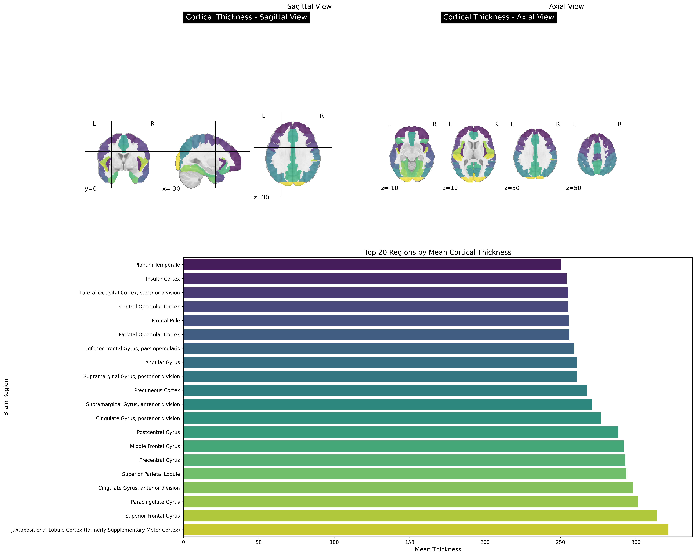
Brain regions colored by cortical thickness.
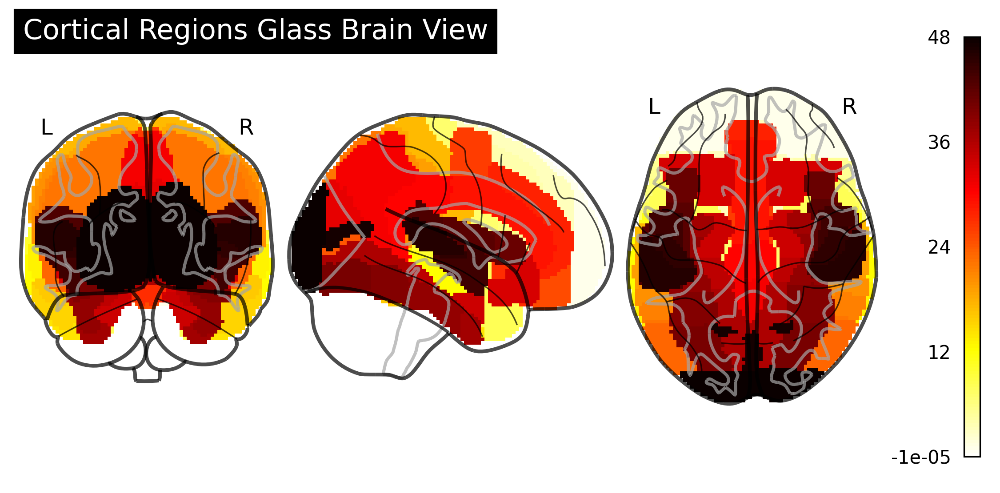
Glass brain visualization of cortical regions.
Group Comparison Analysis
These visualizations compare cortical thickness across the three subject groups: HC (Healthy Controls), PIGD (Postural Instability and Gait Disorder), and TDPD (Tremor-Dominant Parkinson's Disease).
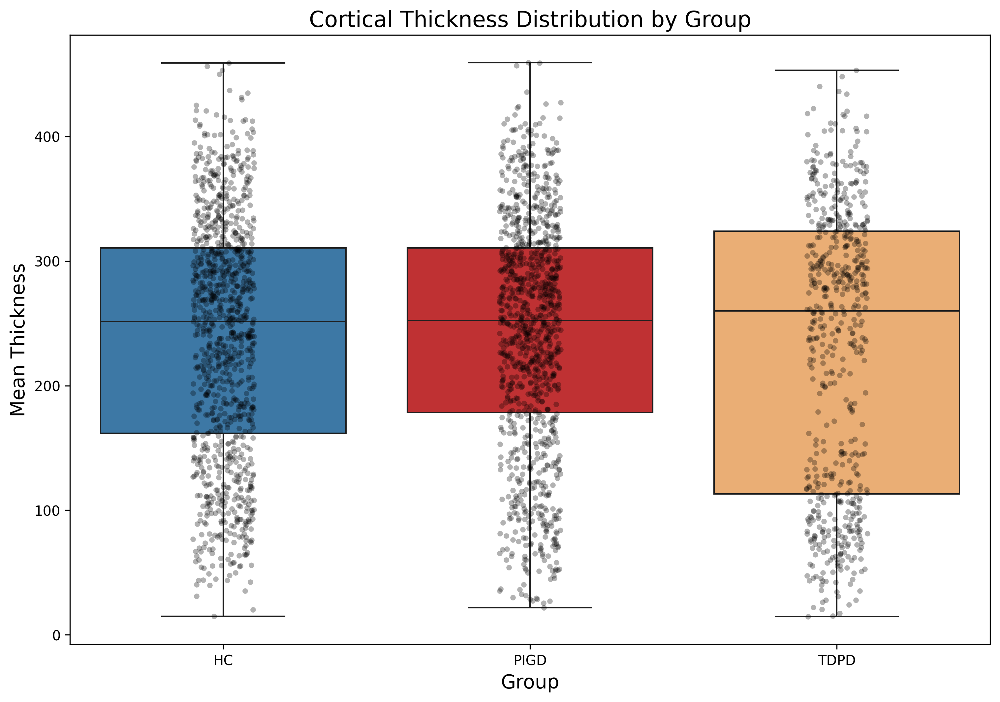
Distribution of cortical thickness by group.
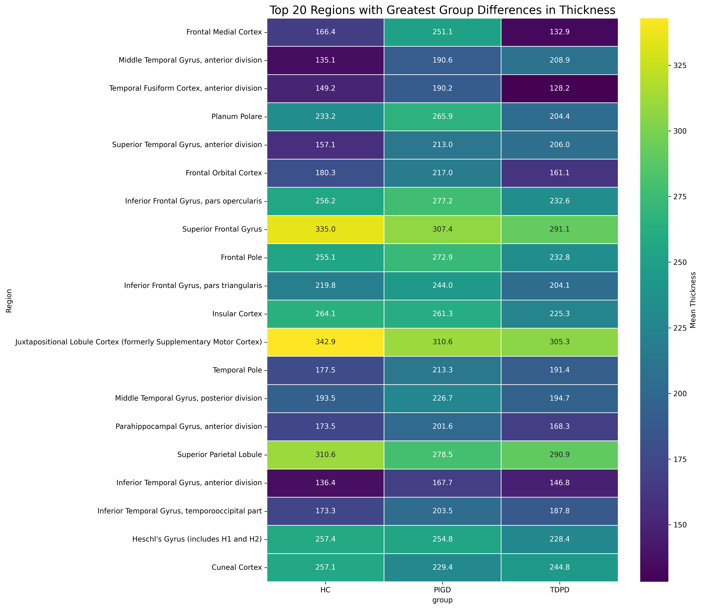
Heatmap of regional thickness by group.
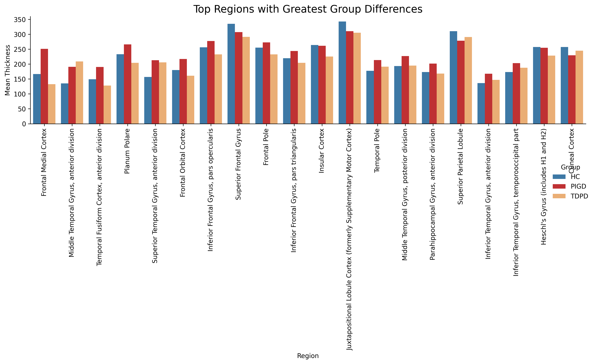
Top regions with greatest differences between groups.

Regions with statistically significant group differences.
Functional Region Profiles
These visualizations show thickness profiles across different functional brain regions.
Thickness profile of motor regions across groups.
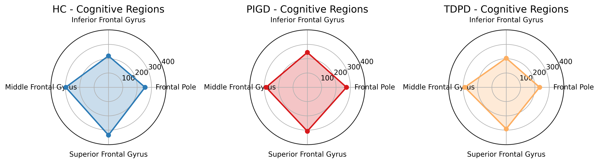
Thickness profile of cognitive regions across groups.
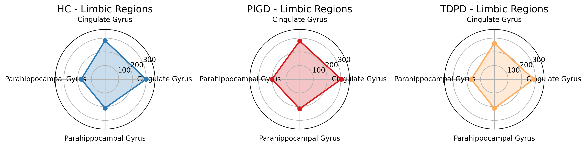
Thickness profile of limbic regions across groups.
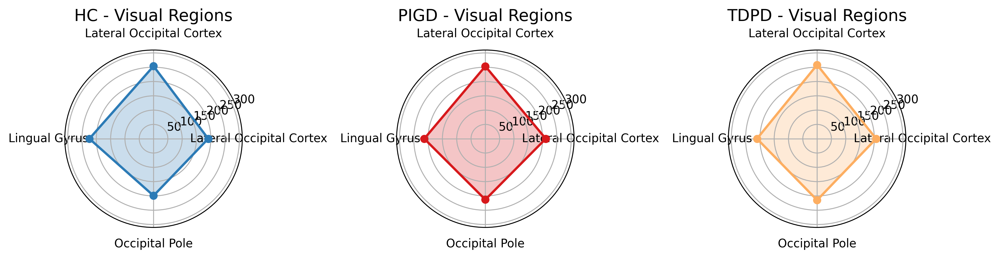
Thickness profile of visual regions across groups.
Hemisphere Comparison
These visualizations compare thickness between left and right hemispheres.

Comparison of thickness between left and right hemispheres by group.

Hemispheric asymmetry by group.

Regions with greatest hemispheric asymmetry.
Network Analysis
These visualizations show network relationships between different brain regions based on thickness correlations.
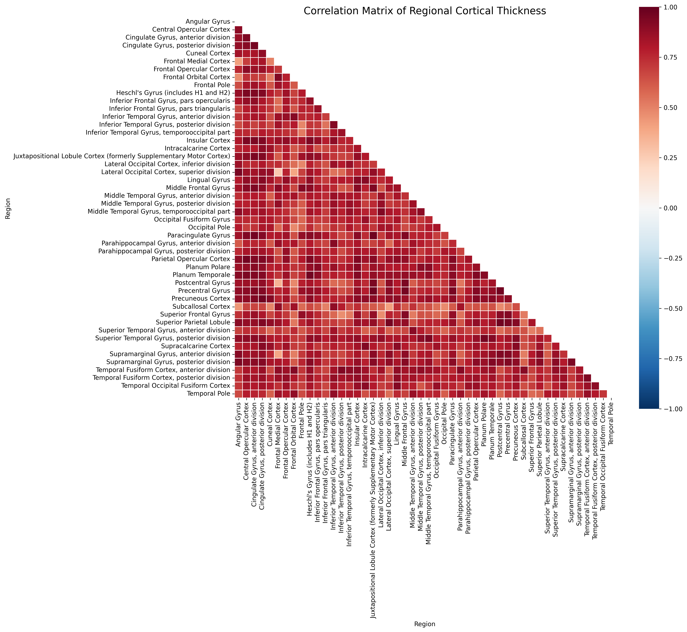
Correlation matrix of regional thickness.
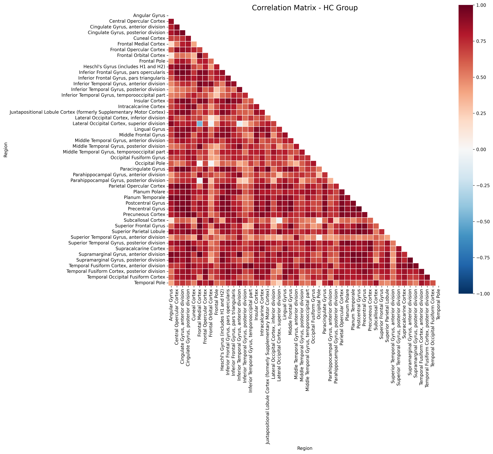
Correlation matrix for HC group.
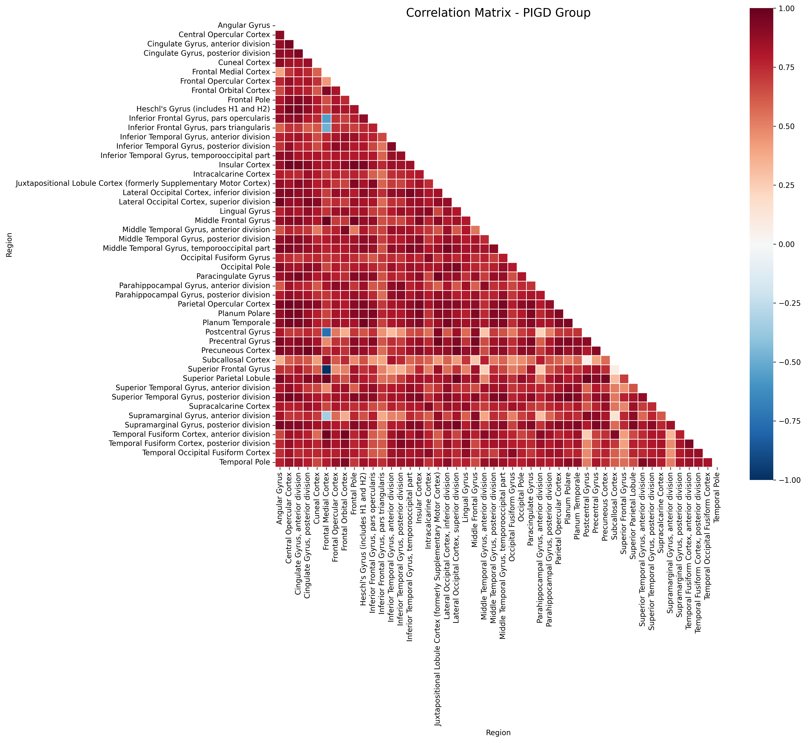
Correlation matrix for PIGD group.
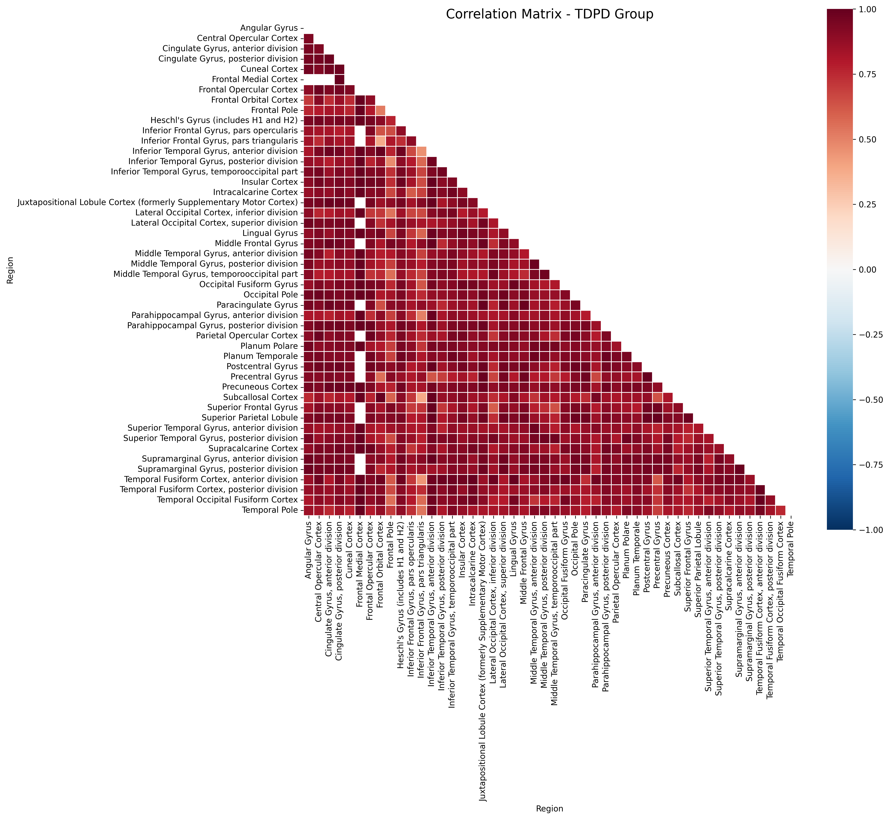
Correlation matrix for TDPD group.
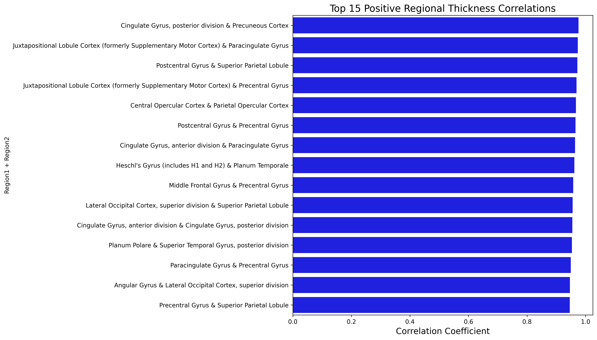
Top positive correlations between regions.
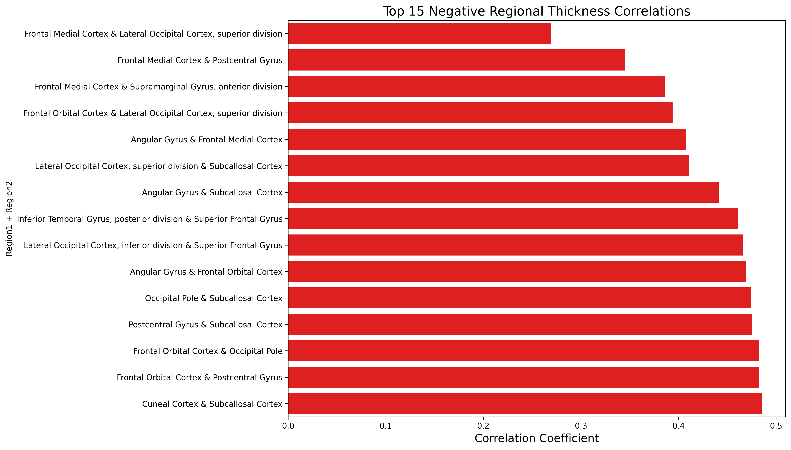
Top negative correlations between regions.